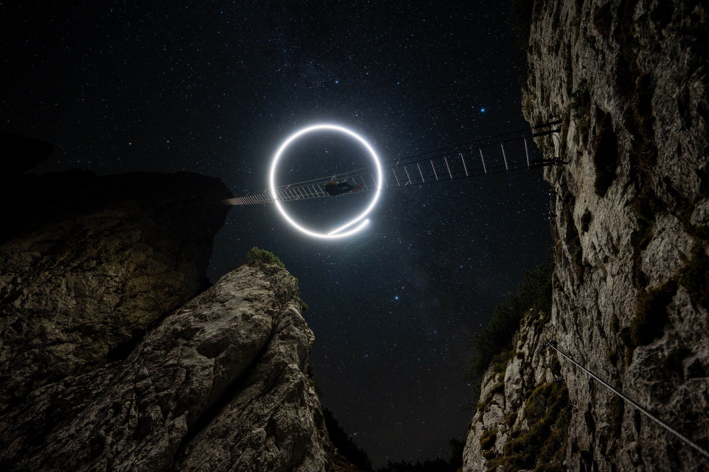

Elias Dietrich · FotografiePeople
in their
element.
Neue Website – bald online
SCROLL
Sport-Editorial. Action, Light & People.
Ich bin Elias – Action-, Sport- und People-Fotograf. „People in their element“ ist dabei wörtlich gemeint: Menschen genau dort, wo sie ganz bei sich sind – von der Kletterin am Berg bis zum Koch in der Küche.
Mein Stil: Sport-Editorial. Klingt kitschig? Aber gezielte Lichtsetzung ist für mich selbst mitten in der Action unverzichtbar – sie macht aus einem Moment ein Bild.
Diese Auswahl zeigt aktuelle Arbeiten. Die neue Website mit Work, Stories und About ist in Arbeit und geht in den nächsten Monaten online.
Kontakt
Elias Dietrich
kontakt@eliasdietrich.at
+43 670 4033146